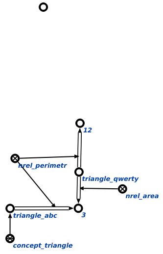

Команда поиска различий между заданными сущностями предназначена для поиска между двумя сущностями, поданными на вход данной команде. Результатом выполнения команды являются все найденные различия в рамках согласованной части базы знаний Например:
